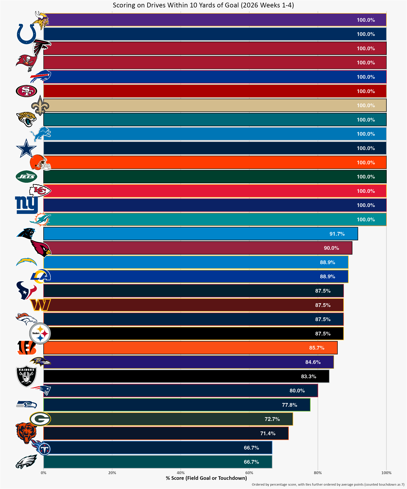
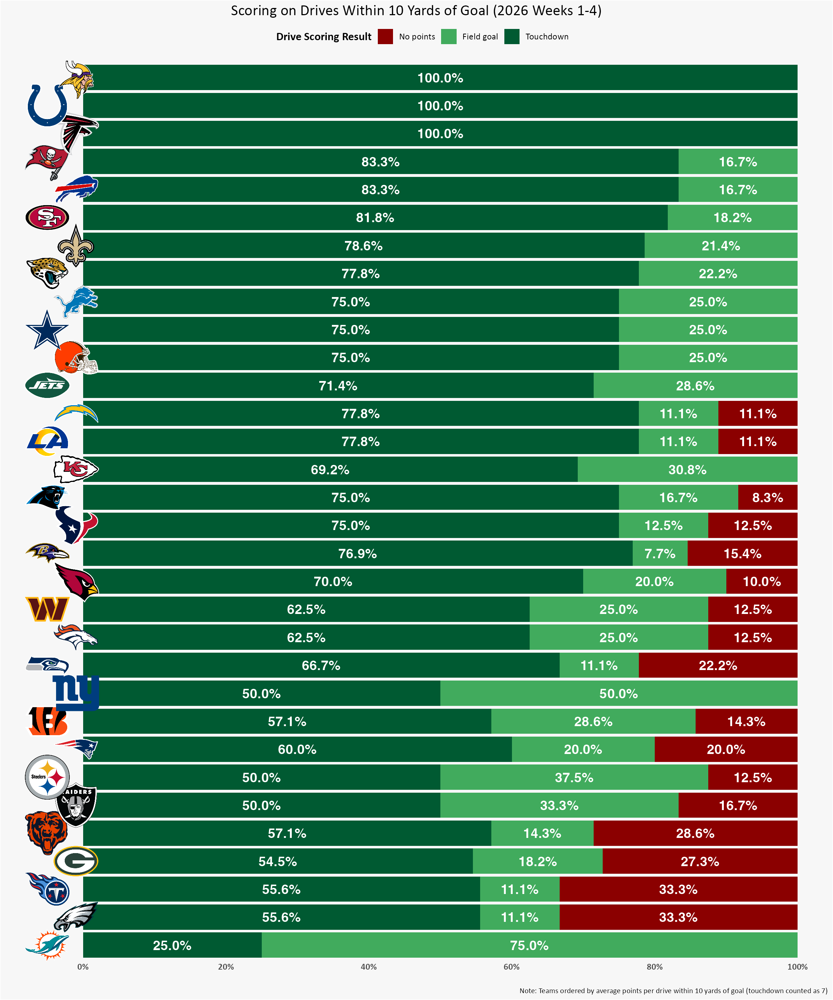
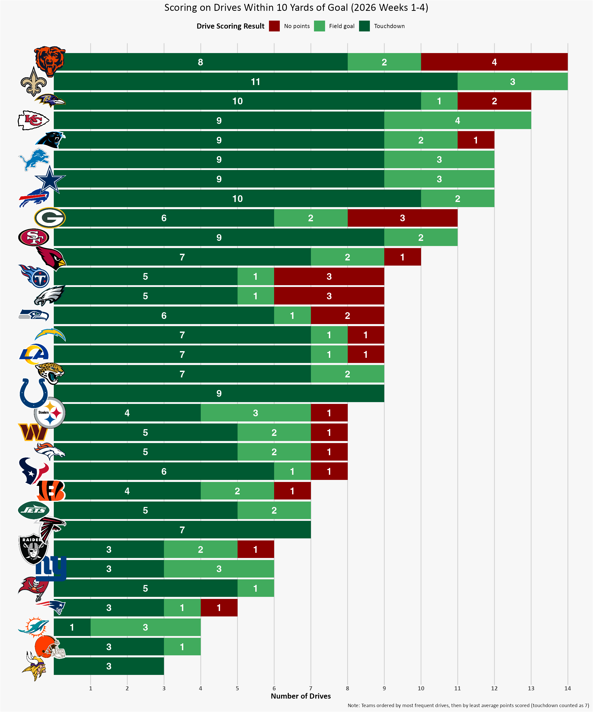
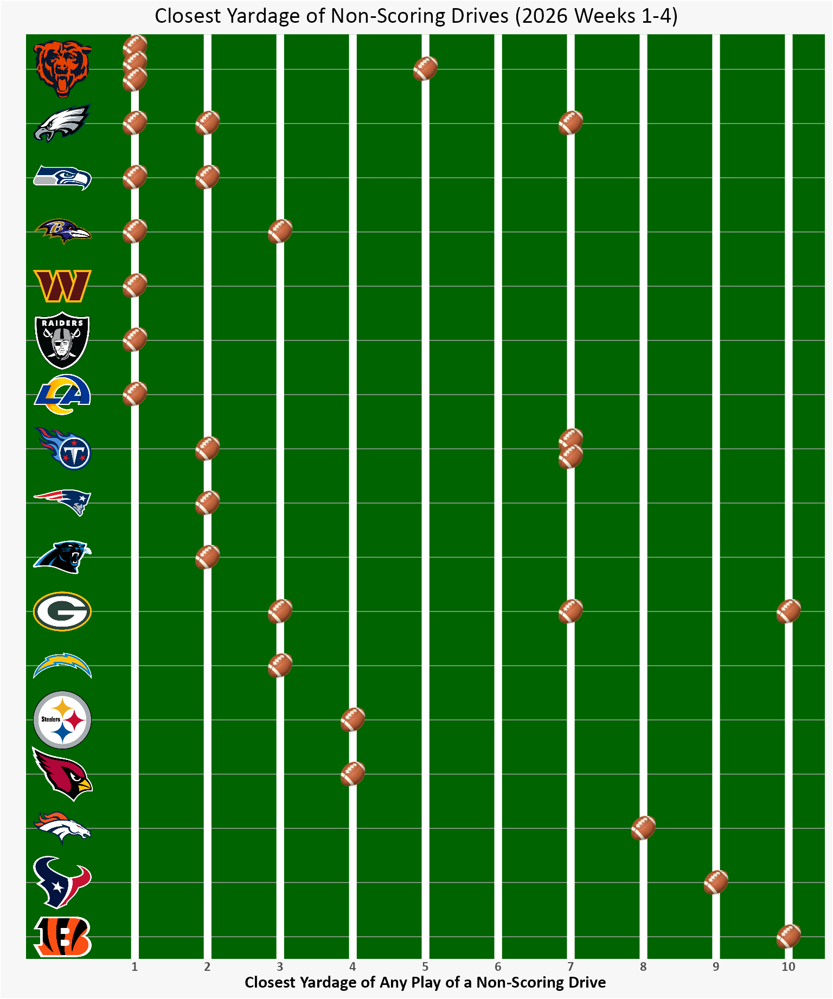
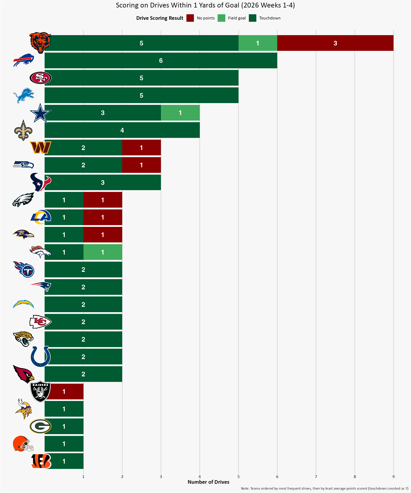

The Bears failed to score in really short yardage situations in week 4. Credit to the Jets’ goal line defense. But it also seems like a frequent problem for the Bears offense this season.
It feels like the Bears are uniquely struggling at scoring points when they are incredibly close to the goal line.
Is it just a feeling, or is there any data to back up my hunch?
(That is, can I somewhat cherry-pick/not-fully-objectively run some analyses to express my pain through some data storytelling? 😂)
More generally: How are teams performing in close to goal drives in the 2026 season?
I’m not interested in just the red zone (inside the 20 yard line), but even closer:
Drives that make it within 10 yards, which I will call “close to goal drives”.
NoteNitty-gritty details of “close to goal drives”
Using the nflverse data, I am defining this as is any drive that has a single play in the drive starting from 10 yards or closer to the opponents goal line. (Note that yardage is always recorded at whole increments, and “within 10 yards” usage in football includes right at the 10 yard line, so less than or equal to the 10 yard line, <= 10). This will include drives that made it within 10 yards but then went backwards (through penalties or tackles/going out of bounds behind the line of scrimmage).
Note that these drives do not necessarily have “goal to go” situations (a team could make it within 10 yards but the first down marker is short of the goal line, and they end the drive via a score, turnover, or time expiring). We could have use the term “low red zone”, but I just prefer to call this sample “close to goal drives”.
Any drive that never starts a down within 10 yards of the goal line is not included — conceptually this means we are not looking at overall offensive scoring, as a team could be offensively highly effective and scoring longer touchdowns (or kicking field goals) without ever having a down inside of 10.
I’m just conceptually interested right now in when a team gets close (<= 10 yards), how are they performing — are they able to punch it in the end zone or at least score points?
Note that I am excluding from analyses two drives that did get within the 10 yard line but ended with QB kneel downs at the end of the game — these were teams winning and closing out the game, and this scenarios do not conceptually represent the failure to score points in close yardage that I’m interested in. (Specifically: Both in week 4, the Seahawks beating the Chargers and the Vikings beating the Dolphins.)
Taking a look at the percentage of time each team scores when a drive makes it inside of 10 years, 15 of 32 teams scored on every close to goal drive.
Overall, even the worst teams are more often than not going to walk away from a close to goal drive with points (that is, greater than 50% of the time).
But the worst teams at close to goal drive scoring are the Titans and Eagles, with the Bears not far behind as the third worst and scoring just 71.4% of the time.
But scoring a touchdown is much better than settling for a field goal, so we could also think of the average points a team scores on a close to goal drive.1
This story is slightly different, and dramatically so for some teams: The Dolphins, for example, have scored 100% of the time they’ve made it within 10 yards — but they are usually settling for field goals and end up as the worst at average points for close to goal drives.
The Bears are 5th worst in average points for close to goal drives, so also doing pretty bad at close to goal drives by this metric.

So, yes, the Bears are still doing quite bad at getting points on close to goal drives… but the salience of these frustrating endings might be even better demonstrated when we think not of rates and percentages, but pure counts.
The Bears have tied the Saints for the most drives within 10 yards of goal (14 drives for each team) — but the Saints have always managed to score. The Bears 4 drives inside the 10 that resulted in no points is the single worst in the NFL — the Titans, Eagles, and Packers follow, each with 3 trips within 10 yards of goal that have ended without points.

If we really want to inflict some fan pain, we can think of the closest any down got to the goal line among these drives that ended up with no points.
The Bear managed to get to the 1 yard line and end up with no points on 3 different drives (and once at the 5 yard line), looking quite a bit worse than even the next worse (the Eagles with a failure at the 1, the 2, and the 7). 😖
NoteSpecific drives (to relive the pain)
- Week 2 Swift fumble against the Vikings
- Week 3 replay review overturned Loveland breaking the plane and Odunze later dropped a touchdown pass against the Eagles
- Week 4 the multiple replay reviews overturning touchdowns on the opening drive against the Jets
The drive that made it to the 5 yard line was the week 2 Vikings match up where Caleb Williams may(?) have been about to score before going down with a non-contract hamstring injury, and the subsequent field goal attempt was blocked.
At least the Eagles failure at the 1 yard line was against the Bears defense, with a pick of QB Dalton by our rookie safety Thieneman. Let’s take some solace in that? 🤷😂

But the Bears also end up at the 1 yard line more often than other teams. Although they have the highest number of no point results from drives that make it to the 1, they also are tied (with the 49ers and Lions) in second place with 5 touchdowns on drives inside the 1 (behind only the Bills with 6), and like only the Broncos and Cowboys they have also successfully kicked a field goal on drives inside the 1.

So there is definite room for improvement, they may really need to convert those close situations into touchdowns to get wins later in the season.
But that was all a bit negative, so let’s re-frame:
The Bear’s offense is moving the ball to be able to get down that close so often, and a fuller picture of overall offensive production and points looks pretty good.
This game was won with another backup QB (second string was ready to go this week).
And so far the defense has been exceeding expectations.
3-1, Bear Down! 🐻⬇️🏈
Data citation
Carl S, Baldwin B, Sharpe L, Ho T, Edwards J (2025). nflverse: Easily Install and Load the ‘nflverse’. R package version 1.0.3, https://nflverse.nflverse.com/.
Footnotes
No points and field goals are obviously 0 and 3, respectively, but I will count a touchdown as 7 points which assumes a successful extra point attempt (because it is by far the most common follow up scenario). I am not looking at the actual follow up, because situational football would heavily influence when a team might go for a 2 point conversion, which has higher failure to convert rates.↩︎